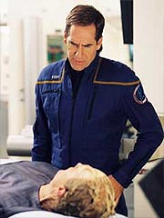
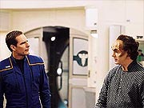

|
MANCHETE
DO EPISDIO
tica
mdica aliengena e escalada
disputam pela ateno no episdio
Episdio
anterior | Prximo
episdio
Sinopse:
Phlox est alimentando seus bichinhos e explica a Hoshi o que um "pingo" (tribble) ao receber uma correspondncia de Denobula. O governo Denobulano est requisitando Enterprise o favor de pegar um grupo de gelogos no planeta Xantoras, um mundo recm-tomado por uma faco altamente xenofbica que est expulsando todos os aliengenas do planeta.
Ao ficar sabendo, o capito Archer imediatamente concorda em ajudar. Em uma reunio com sua equipe, fica decidido que Mayweather (com sua experincia em escaladas) deve acompanhar Tucker e Reed na procura pelos gelogos. Para cumprir as determinaes do novo governo local, o trio precisa estar de volta em trs dias.
 Enquanto os trs partem rumo misso num Shuttlepod, a Enterprise presta socorro a uma nave aliengena seriamente danificada em rbita de Xantoras, que no teve permisso para retornar e aterrissar. Dentre os pacientes est um chamado Hudak. Ele pertence raa dos Antarans, velhos rivais e inimigos dos Denobulanos. Sua ltima guerra ocorreu h 300 anos, mas ainda h muito conflito entre os dois povos.
Ao descobrir que Phlox o mdico, Hudak se recusa a receber tratamento, muito embora isso v lev-lo morte. Archer ordena Phlox a ministrar o tratamento de qualquer modo, revelia da vontade do paciente, mas o mdico informa-o de que no poder seguir as ordens -- contra o cdigo de tica Denobulano desrespeitar a vontade do paciente. Diante disso, Archer pede que ao menos Phlox tente convencer Hudak a aceitar o tratamento e superar o preconceito.
No planeta, Travis, Trip e Reed continuam sua perigosa jornada pelas cavernas. Em certo momento, o trio quase despenca de um penhasco, salvo apenas pela perna de Mayweather, que no ltimo momento se prendeu a uma parede e evitou que os trs despencassem. Com o incidente, entretanto, o alferes quebrou a perna, obrigando Trip e Reed a seguirem sozinhos.
A bordo da Enterprise, Phlox comea a tentar se aproximar do Antaran, mas recebido com extrema hostilidade. De tanto ser agredido, e visivelmente abalado, o mdico acaba desistindo. Mais tarde, ele interpelado por T'Pol, no refeitrio, mas se mostra emocionalmente abalado com o conflito.
Archer tambm tenta argumentar com Hudak, mas os esforos so em vo -- o aliengena parece irredutvel. No planeta, dois dias j se passaram, e os tripulantes da Enterprise finalmente encontraram os gelogos que procuravam. Ao comunic-los do que est acontecendo l fora e da necessidade de partir, o trio de Denobulanos se recusa. Perdendo a pacincia, Trip ordena que os trs deixem as cavernas e partam com eles, por bem ou por mal. Relutantemente, os cientistas concordam, pedindo apenas ajuda para transportar as amostras que coletaram -- segundo eles, isso pode ajudar muito a combater problemas de instabilidade geolgica em Denobula.
De volta enfermaria, Phlox volta a conversar com Hudak e explica o porqu de seu abalo emocional. Embora tenha sido criado no mesmo ambiente preconceituoso em que o Antaran estava imerso, Phlox decidiu que no propagaria essa mentalidade para seus filhos. Sua postura acabou fazendo com que um de seus cinco filhos, Mettus, cortasse relaes com ele. Verdadeiramente sensibilizado, Hudak decide que vai aceitar o tratamento.
No planeta, Trip comanda o grupo no retorno Enterprise, mas eles so surpreendidos por fortes tremores de terra causados por disparos na regio das cavernas. Archer monitora a situao da rbita e questiona o governador de Xantoras a respeito do ataque. A autoridade garante que no est atacando a tripulao da Enterprise, mas um grupo de rebeldes. Apesar disso, Archer ameaa disparar contra Xantoras caso eles no interrompam os disparos. Sob risco de iniciar outro front de guerra, o governo de Xantoras concorda com o cessar fogo.
Com isso, Trip tem tempo suficiente para chegar ao Shuttlepod e voltar Enterprise. A bordo, Hudak parece ter mudado seu ponto de vista e se tornado mais tolerante idia de que os Denobulanos no so o "bicho papo". Ele at aceita partir na mesma nave de transporte que tambm levar os recm-resgatados gelogos de Denobula.
A Enterprise retorna sua misso de explorao, enquanto Phlox, abalado pela recente experincia, decide escrever uma carta a seu filho, na tentativa de reatar laos.
Comentrios:
"The Breach" na verdade dois episdios diferentes. Originalmente pensado como um roteiro no estilo clssico das verses modernas de
Jornada nas Estrelas, com um enredo principal e outro secundrio, o segmento aparece um tanto desconfigurado, com duas histrias que competem pelo enfoque principal.
Muito mais inspirado (e certamente inspirador) foi o lado da trama que se desenvolveu a bordo da Enterprise, com Phlox e seu dilema para tratar um paciente que, segundo seu "juramento hipocrtico" Denobulano, no deveria receber tratamento. O resgate dos gelogos na superfcie, embora bem executado, carece de substncia que justifique o tempo de tela que foi gasto com ele.
O episdio comea com uma cena literalmente saborosa, em que vemos a primeira apario de um Pingo na srie, seguida pelo primeiro devoramento de Pingo j visto, para o choque de Hoshi, que havia ficado to encantada quanto Uhura quando primeiro viu os simpticos bichinhos em forma de bola de plo que so considerados inimigos mortais do Imprio Klingon.
Apesar desse tom bem-humorado, j se v na sequncia pela expresso de Phlox que as coisas vo ficar mais tensas. Mas essa sensao s se justifica quando os feridos da nave aliengena so trazidos a bordo e descobrimos que o passado Denobulano no foi sempre um mar-de-rosas.
De certa maneira, vemos um paralelo de dio similar ao que aconteceu entre judeus e alemes durante a II Guerra Mundial, ou mesmo entre palestinos e israelenses, em tempos mais recentes. Assim como no mundo real, na fico essas cicatrizes tambm demoram a curar, e vemos todo o seu poder na forte atuao de Henry Stram, como Hudak, e na belssima interpretao de John Billingsley.
 Alis, mais uma vez, o destaque fica por conta do desempenho de Billingsley, que mostra que nenhum trejeito ou maquiagem pode ficar no caminho de sua comunho com a verossimilhana de seu personagem. E uma vez mais seu personagem se fortalece ao se colocar em conflito direto com o capito Archer.
Desde "Dear Doctor", estava demonstrado que Bakula e Billingsley extraam o melhor um do outro quando seus personagens eram colocados em lados opostos. Naquela ocasio, ordens superiores fizeram com que os roteiristas aliviassem um pouco o conflito entre Phlox e Archer. Aqui, entretanto, a produo faz a coisa certa e deixa os dois entrarem num confronto direto. Archer d uma ordem a Phlox, que por sua vez eticamente obrigado a recus-la. E ainda d uma alfinetada no capito mais tarde, sugerindo que ele "deveria estar ciente da confidencialidade mdico-paciente, mas poderia sempre me ordenar a contar o que aconteceu". Bravo!
Outro sinal de que a histria estava no caminho certo foi a baixssima necessidade de efeitos especiais complexos para cont-la adequadamente. A coisa mais complicada executada aqui foi a demonstrao de que Denobulanos tm extrema facilidade para escalar paredes e a exibio de alguns penhascos criados por computador. Algum trabalho tambm foi despendido com um pequeno conflito entre o Shuttlepod e uma nave de defesa de Xantoras, assim como na criao da nave aliengena avariada, mas nada que marcasse o episdio como uma "rica coletnea de efeitos visuais".
Para manter o "coeficiente de ao", o segmento que envolveu as escaladas de Trip, Reed e Mayweather. Alis, Travis novamente recebe alguma ateno aqui, mostrando que aos poucos os roteiristas parecem estar aprendendo a escrever para o piloto. Paradoxalmente, parecem estar comeando a se esquecer por completo de Hoshi. Ao que parece, ser um verdadeiro desafio para os produtores de
Enterprise manter um nvel de ateno razovel para esses dois personagens simultaneamente.
A direo razoavelmente conservadora de Robert Duncan McNeill uma escolha interessante, permitindo que os personagens surjam da tela como os verdadeiros protagonistas da trama, em vez de as estripulias da cmera. Mais uma vez, a escolha favorece fortemente o enredo voltado para Phlox e Hudak, em detrimento da histria nas cavernas do planeta, que mereceriam talvez uma batida um pouco mais agitada.
Apesar da falta de equilbrio entre os dois enredos paralelos e a dificuldade em escolher um deles como a "histria principal",
"The Breach" um episdio interessante em termos dramticos e enriquecedor para os enciclopedistas de planto interessados em aprender mais sobre a cultura Denobulana.
Citaes:
Archer - "Don't sacrifice your life based on preconceptions."
("No sacrifique sua vida baseado em preconceitos.")
Archer - "I prefer to make my judgments based on first hand experience."
("Prefiro fazer meus julgamentos baseado em experincia de primeira mo.")
Tucker - "We didnt risk our lives to hear you say 'thanks, but no thanks'!"
("No arriscamos nossas vidas para ouvir vocs dizerem 'obrigado, mas no obrigado'!")
Tucker - "If you don't start moving in the next 5 seconds I'm going to get out my phase pistol and shoot you in the ass... one... two..."
("Se voc no comear a se mover nos prximos 5 segundos eu vou sacar minha pistola de fase e atirar no seu traseiro... um... dois...")
Trivia:
 A produo foi de 5 a 14 de fevereiro de 2003. Como seus personagens tinham de fazer rappel em um rochedo para resgatar os gelogos Denobulanos, Anthony Montgomery, Connor Trinneer e Dominic Keating receberam treinamento especial pelo coordenador de dubls Vince Deadrick Jr.
A produo foi de 5 a 14 de fevereiro de 2003. Como seus personagens tinham de fazer rappel em um rochedo para resgatar os gelogos Denobulanos, Anthony Montgomery, Connor Trinneer e Dominic Keating receberam treinamento especial pelo coordenador de dubls Vince Deadrick Jr.
o segundo episdio de Enterprise dirigido por Robert Duncan McNeill (Tom Paris). O primeiro foi
"Cold Front". Ele comentou o drama da produo. "John Billingsley tinha uma grande histria de mdico, e no tnhamos o terceiro ou o quarto ato quando comeamos. Pegamos o terceiro ato no segundo dia de filmagem. E ento John tinha uma cena um dia onde ele deveria meio que entrar em choque, mas no havamos visto o quarto ato. Era tudo
sobre um grande segredo que Phlox ia revelar no quarto ato -- e ele disse a mim, o que esse segredo? E eu no sabia, ningum sabia. Ento fizemos algumas ligaes telefnicas e eles nos deram alguma idia do que ia ser. Mas literalmente algumas vezes voc comear a filmar um episdio e voc nem sabe qual o segredo que voc est escondendo o episdio todo."
McNeill tambm falou da direo das sequncias de escalada. "Usamos cada polegada daquele cenrio, cada ngulo que podamos achar para filmar a sequncia. Qualquer lugar em que eu podia colocar os atores na parede, eu os colocava. Para manter a iluso de que eles estavam viajando milhas e milhas, eu nunca podia filmar o set inteiro. Movamos os atores trs ou quatro metros para o lado e mudvamos o ngulo de cmera, e parecia que eles haviam descido outros 30 metros de onde estavam antes. Quando a sequncia dos dubls foi concluda, todo mundo que viu olhou para aquilo e disse, 'uau, parece maravilhoso'. algo sado de "Vertical Limit" ou "Cliffhanger", um daqueles grandes filmes de escalada de montanhas."
O episdio acabou ganhando cenas adicionais s pressas, quando faltou material para cobrir todos os 43 minutos exigidos.
Ficha
tcnica:
Histria de Daniel McCarthy
Roteiro de Chris Black & John Shiban
Direo de Robert Duncan McNeill
Exibido em 23/04/2003
Produo:
047
Elenco:
Scott
Bakula como Jonathan Archer
Jolene Blalock como
T'Pol
John Billingsley
como Phlox
Anthony Montgomery
como Travis Mayweather
Connor Trinneer como
Charlie 'Trip' Tucker III
Dominic Keating como
Malcolm Reed
Linda Park como Hoshi Sato
Elenco convidado:
Mark Chaet como Yolen
D.C. Douglas como Zepht
Laura Putney como Trevix
Henry Stram como Hudak
Jamison Yang como tripulante
Episdio
anterior | Prximo
episdio
|